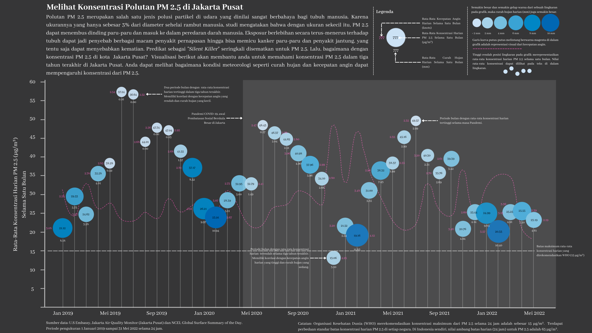

Konsentrasi Polutan PM 2.5 di Jakarta Pusat
Published: 28.06.2022
Visualisasi data untuk konsentrasi polutan PM 2.5 di Jakarta Pusat dalam rentang waktu 1 Januari 2019 sampai 31 Mei 2022. Data diambil dari sensor Jakarta Air Quality milik U.S Embassy di Jakarta. Data raw yang didapat berupa data records dalam setiap jam. Untuk membuat visualisasi ini, data perjam tersebut di-upsampling menjadi data harian kemudian dicari rata-rata harian untuk setiap bulannya. Di visualisasi ini juga ditampilkan kondisi metereologi seperti curah hujan dan kecepatan angin sehingga kita dapat melihat korelasi dua atribut tersebut dengan tinggi-rendahnya konsentrasi polutan yang ada. Oh iya, data meteorologi yang digunakan berasal dari data BMKG.

Visualisasi ini dibuat karena aku mau coba hal baru; menggabungkan visualisasi data yang “mentah” dihasilkan dari package Python yaitu Altair dengan graphics editor untuk mempercantik visualisasinya menggunakan Procreate. Relayouting, menambahkan narasi juga legenda digunakan menggunakan Procreate karena sangat fleksibel untuk melakukan hal tersebut. Cukup senang dengan hasilnya, karena visualisasi datanya jadi tidak terlihat membosankan. Kedepannya mungkin juga akan belajar Photoshop jadi bisa lebih memperluas kemungkinan-kemungkinan bentuk visualisasi data yang dihasilkan.